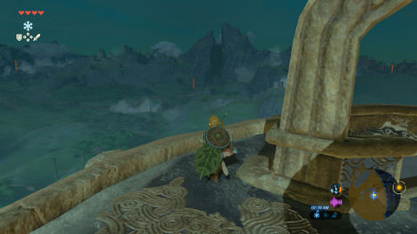
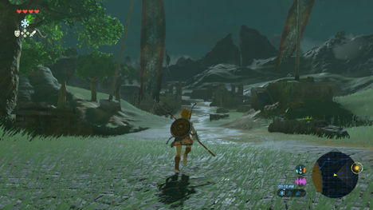
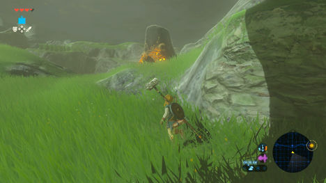
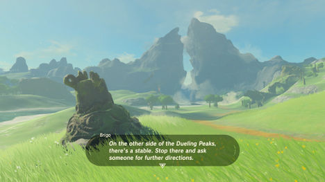
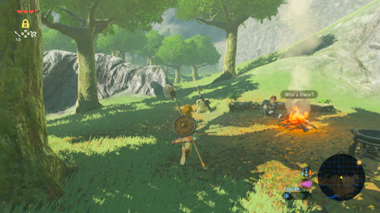
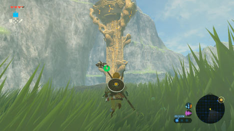
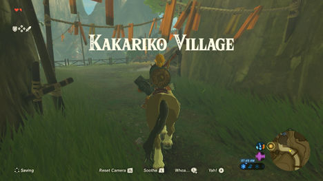

Leaving the Great Plateau

一旦你已经准备好离开孤岛高原了，现在是要找到Impa。 你离开高原并滑翔下来会影响接下来发生的事情 - 你可以自由地探索任何你想要的地方，并且自己去冒险。 请注意，高原周围有有个有趣的地方：
- 在Keh Namut神社的东南部，是Gerudo沙漠的入口，您可以在山谷入口附近找到Jee Noh神社。请注意，该区域是相当高的水平线，现在最好避免前往。 Keh Namut神社东北，在大瀑布下方，您可以找到一系列连接到Dah Kaso神社的桥梁和岛屿 - 只是注意强大的Hinox小老板！
- 在Ja Baij神殿的南面，是海拉尔湖，以及跨越水的海拉尔大桥。
- 只要到Oman Au Shrine神社的西北部，你可以发现下面的几匹马，使其成为良好的载具。你可以在滑翔伞就位后立即骑上，或者潜入其中一个，只要确保快速安抚马，要么在你的体力消耗之前安全驯服，或者你将被抛出。
- 马不远处的西方是一个马社，Outskirt马社。在这里，你可以注册你驯服的野马，给它一个名字，并随时召唤它。还要跟别人说话，有几个支线任务可以接。那里有一个很远的北部是中央塔，但它被多个守护者严格保卫！
- 到了Ja Baij合神社的西北部，你可以看到下面的城镇遗址，找出两个受到博科比林袭击的旅客。帮助他们，他们会奖励你
你也可以在废墟中找到宝箱
前往Dueling Peaks
无论你在哪里，当你准备出去的时候，沿着东面走过废墟，穿过一座跨越远处的两个强大的Dueling Peaks的桥梁。
前哨遗址充满了旧的箱子和生锈的武器，以及藏在老堡垒中的几个箱子。 此外，您将经过懂不岗哨废墟(East Post Ruins)，那边有几个Moblins在左侧。 做好准备，一个Moblin将在路上攻击你，更多的博科比林从废墟的尽头两旁埋伏你。
在桥前的右边，你可以窥探到Bosh Kala神社。 请记住，神社是获得灵魂球，因此是更多的心脏容器或体力的唯一途径 - 所以他们值得你不停的去探索。
穿过Proxim Bridge（一定要查找桥梁附近的耐力蘑菇 - Stamella Shrooms），你会发现一个男人凝视着名叫Brigo的城堡，他深深地害怕那邪恶的征兆。 他会警告你关于守护者（不是你在大平原上看到的固定类型，而是快速移动和可怕的守护者在巡逻海拉尔城堡）。 他还会给你指出Kakariko村的方向，指着在决斗的另一边一个马社。
继续前进，河边有一个很大的森林区域（注意Octoroks可以扔东西在你身上）。 沿着海滩，你也会找到开着宴会博科比林，但是你可以避开他们的道路，在右边找到一个休息的商人，名叫吉罗，你可以出售物品换回卢比！
同样值得你去爬上附近的决斗峰塔(Dueling Peaks Tower)。 这个复活塔在水中，所以得到它可能会有点困难。 您可以清除附近的博科比林营地，并在山上滑行到塔楼，或者游泳到塔楼，寻找倾斜的岩石，让你能上岸。 请注意，当您解锁该塔时，您的Sheikah Slate将获得一个新的能力，检测到附近的神庙。 这是有用的，因为一些可以很好地发现隐藏的神社。
当你在决斗峰下移动时，注意水 - 两个Lizalfos正在上下游泳，巡视河流。 如果他们发现你，他们会吐出可以伤害你的射弹。 如果你把它们吸引到边缘，那么他们会从水中跳出来。 您也可以在这里找到名为Mezer的旅行商，出售肉类，山顶下方的山脊上还有另一个神社Ree Dahee神社（神殿里有一个漂亮的登山者头巾在神殿的宝箱里面！）
前往Kakariko的路
在决斗峰的另一边，你可以穿过大双子桥(Big Twin Bridge)，找到一个新的马舍 - 决斗峰马舍。 这里有一些事情要做，比如买卖商品，或找到一个或两个支线任务。 你也可以和Sagessa谈谈，并询问药剂的事情以免费获得一个加速药剂。 在马舍的对面是另一个神社 - Ha Dahamar神社，它被尖刺包围，所以你可能需要创建一个平台来跳过它们。
朝北的路将带您到Kakariko村，所以继续朝这个方向走，如果你愿意骑马的话也可以。 如果你还没有，你应该高度考虑驯养一匹马，在周边地区可以找到许多马。

{kind=link}
{kind=link}
{kind=link}
{kind=link}
{kind=link}
{kind=link}
{kind=link}
{kind=link}
{kind=link}
驯服一匹马，悄悄地潜入一匹马后面，或从一个有利位置向上滑落，直到你能够骑上或抓住一只。 在这一点上，你需要在你的体力消耗之前快速点击“L”按钮。 如果你成功，马会冷静下来，让你骑。 如果没有，你会被抛出，必须再试一次。
当一匹马被驯服时，你需要尽快把它保持稳定，并注册 - 如果不是，如果你长时间地离开它，你会松开马。
Hestu the Korok
通过桥梁和上面的道路是相当平静的，但你可以在路边找到一个相当大的命名为Hetsu的Korok。
{kind=link}
{kind=link}
如果你遇到过其他Koroks并且得到了Korok种子，你可能已经听说过他了。 不幸的是，他有一个需要先修复的问题，“无价的沙球支线任务”开始。 这是值得的，因为您可以在Korok Seeds交易，以增加物品，如武器，盾牌和弓箭的库存空间。
走上狭窄的路径，这里没有任何敌人，但是你可以找到一个出售耐力增加的食物的旅行商，还有一个女人会用你的炸弹来挖矿。
卡卡里科村 - Kakariko Village

{kind=link}
进入巨大的拱门，你会到达Kakariko村 - 最后保留Sheikah的村子，和Impa，你的目标。在入口右侧，你会窥探一个瘫痪腿的人。那女人娜娜会注意到你的Sheikah石板，并坚持你要你立刻去见Impa，她在瀑布旁边的房子里面。通过村庄到远处，两个人会尝试阻止你，然后才意识到你携带石板的重要性。
和Impa说话，你会更多地了解过去发生的事情，追溯到传奇的时代，你的真实目标将被揭示。当你觉得你准备好了，再次和Impa说话，听到你留下的话，接到你的下一个任务：释放神兽。 Impa还将提及您的Sheikah Slate似乎缺少一些组件，并建议您为Hateno Village进行恢复 - 这应该是您的首要任务。
在开始下一次旅程之前，别忘了停下来探索吧！卡卡里科村拥有很多事情要做，从商店的部分，服装和武器 - 到各种各样的任务，甚至一个名叫Cotera的大仙子的耳语，隐藏在村庄北部的两座神社： Ta’loh Naeg神社和一个似乎埋在地下的神殿，找到大仙女所在的大植物，如果你同意给她100卢比，她会出来同意帮助提升你的衣服 - 只要你有相应的怪物材料。
还有一些支线任务可以在村里和人们谈谈，以了解更多关于世界的信息，而Impa的房子之间的一个女神雕像可以让您用更多的灵魂球交换心容器或耐力轮。
前往内部与Impa交流，获得您的下一个任务：您的主线任务是释放神兽，和另一个可选但重要的目标：封锁的记忆(Locked Mementos)。